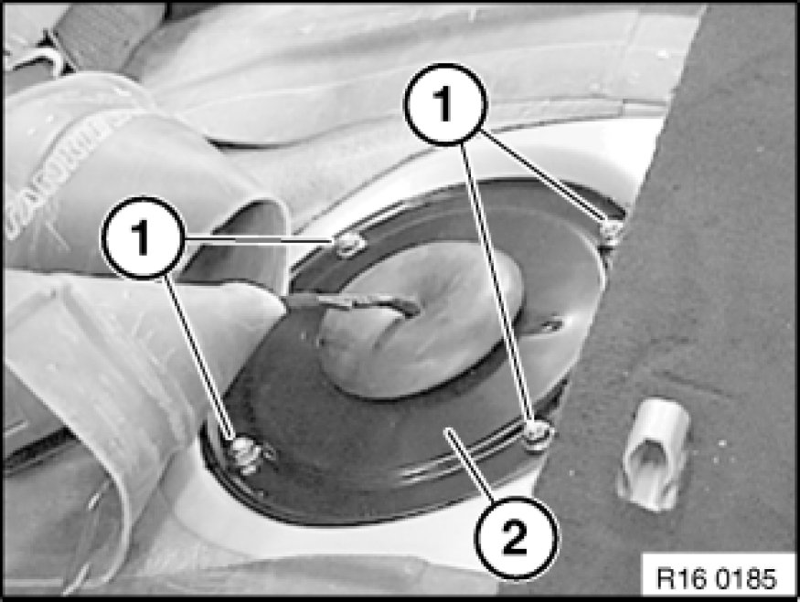
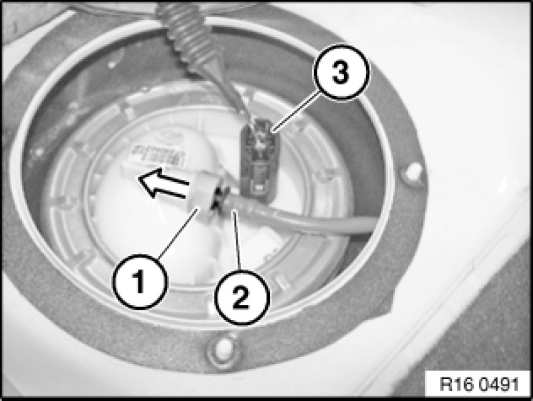
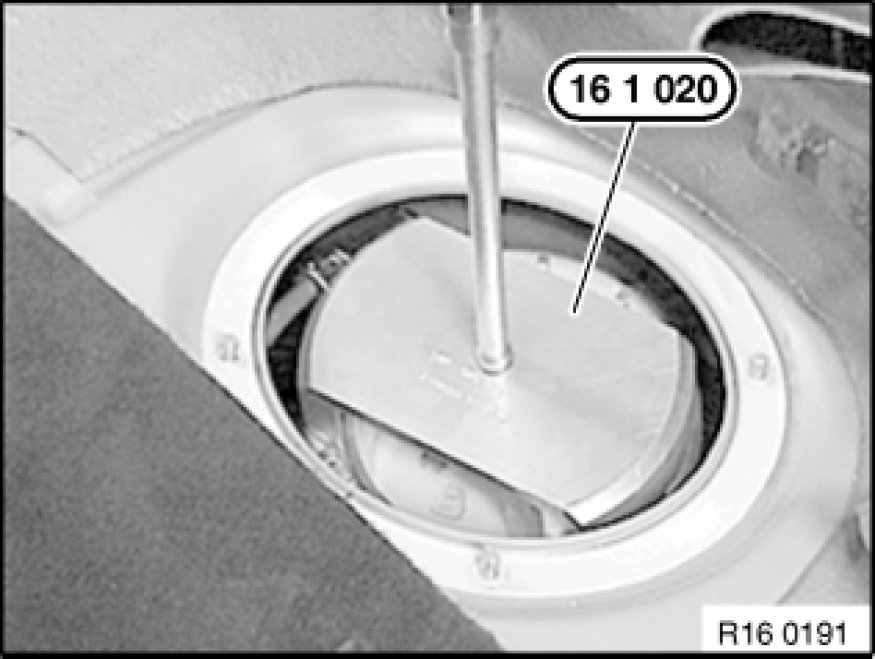
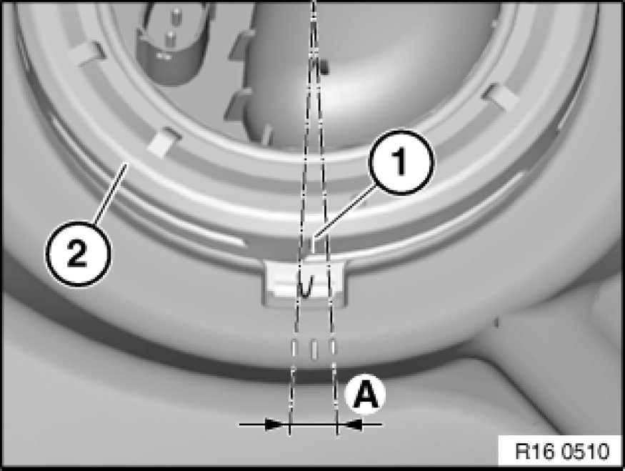
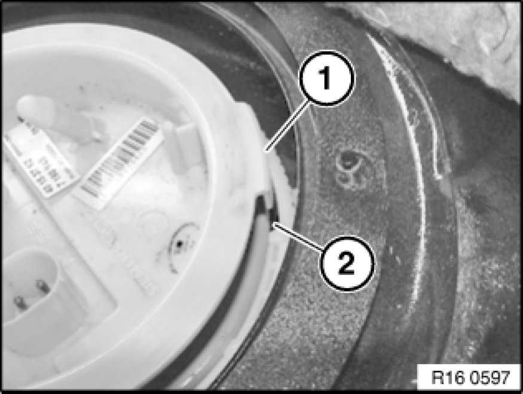
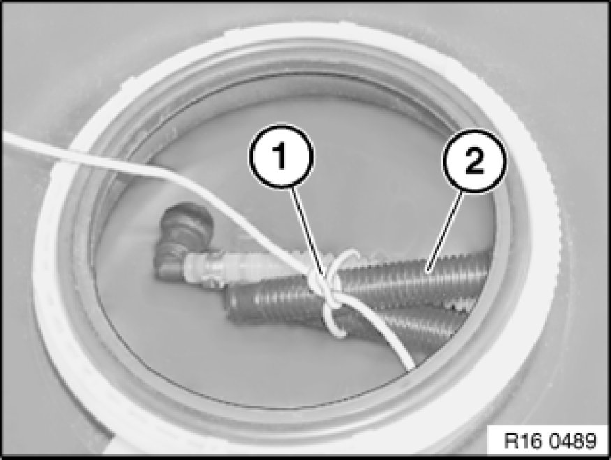
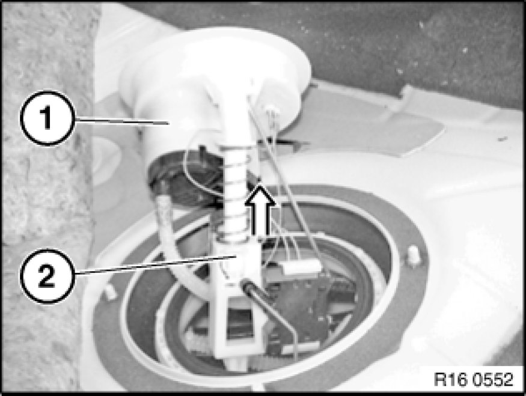
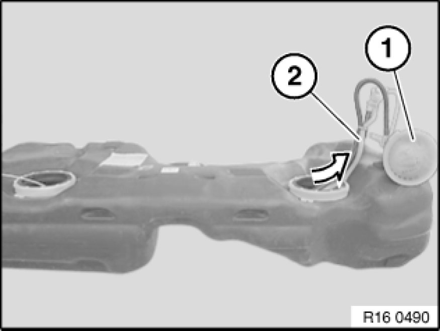

Fuel Filter: Service and Repair
16 14 016 - Removing and installing / replacing fuel filter with pressure regulator

Special tools required:
- 16 1 020 16 1 020 Pin Wrench

Recycling
Fuel escapes when fuel lines are detached. Have a suitable collecting container ready.
Catch and dispose of escaping fuel.
Observe country-specific waste-disposal regulations.

Important!
Ensure adequate ventilation in the place of work!
Avoid skin contact (wear gloves)!
Ensure absolute cleanliness when working on the open fuel tank.
Before starting the engine for the first time:
- Fill fuel tank with at least 5 litres of fuel.

Necessary preliminary tasks:
- Draw off fuel from fuel tank Procedures
- Remove rear seat bench Removing and Installing / Replacing Rear Seat
- Remove right sensor unit
After completing work:
- Check repumping function of suction-jet pump Testing and Inspection

Release screws (1) and remove cover (2) from left side of fuel tank.

Disconnect plug connection (1).
Press grey ring (1) towards sensor unit and detach fuel feed line (3).
Important!
Do not use any tools to release the quick-release fasteners.

Release screw cap with special tool 16 1 020 16 1 020 Pin Wrench and remove service cap.
Installation:
Tightening torque 16 14 1AZ 16 14 Fuel Pump.

Important!
After tightening to specified torque, notch (1) on screw cap (2) must be in area (A)!
Note:
Illustration shows the tank removed.

Installation:
Service cap can only be installed in one position.
When installing, make sure lug (1) of service cap engages in corresponding opening (2) on fuel tank.
Make sure that the lever sensor moves freely before fitting the service cap.
Clean sealing faces and install new seal.

Attach an auxiliary lead (1) to hose pack (2) through service opening.
The auxiliary lead is pulled through with the hose pack towards the left and facilitates subsequent reinstallation.

Carefully lift sensor unit (1) out of tank.
In so doing, press tab (2) against spring force in order to make it easier to feed sensor unit out of tank.

Remove fuel filter (1) and hose pack (2) with auxiliary cable to left.
Installation:
When replacing the fuel filter, modify the end of the auxiliary lead to the new hose pack and carefully pull in through the tank.
Note:
Illustration shows the tank removed.